目 次
１-１ 給与月度・給与支給日と支給項目・控除項目の設定の手順
取り込みや手入力を行う時に共通して行うことがあります。
{kind=link}
② 指定月度の賃金管理データ支給・控除名称の登録

画面が表示されるタイミングについて
ファイルより取り込む場合は、「入力ファイル選択」ボタンをクリックし、「取込データの 給与月度・給与支払日の設定」画面にて「OK」ボタンをクリックし、ファイルを開いた後、設定画面にて「データ読込開始」ボタンをクリックし、場合によって表示されます「『昇降給区分』の設定」画面にて「完了」ボタンをクリックしますと表示されます。
直接入力する場合は、「下表に個人入力行を設定」ボタンをクリックし、「取込データの 給与月度・給与支払日の設定」画面にて「OK」ボタンをクリックますと表示されます。
画面の表示のされ方には全部で３パターンあります。
{kind=link}
{kind=link}
{kind=link}
{kind=link}
一覧表のタイトルの手当01～手当18と控除01～控除18に登録した名称が表示されていることが確認できます。
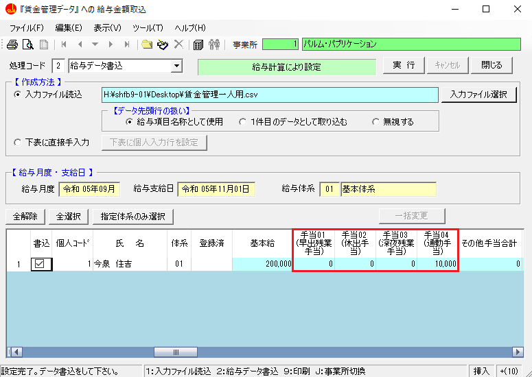 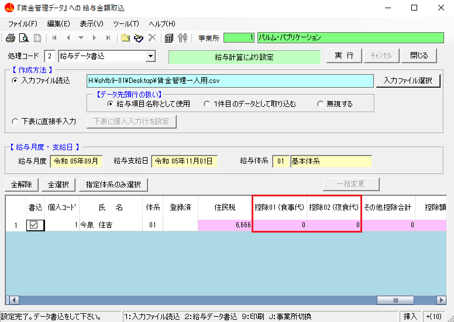{kind=link}
{kind=link}
１-２ ファイルより取り込む
ファイルより取り込む方法について解説します。
{kind=link}
{kind=link}
{kind=link}
{kind=link}
{kind=link}
{kind=link}
{kind=link}
③ 項目の結び付けを行う
データの先頭行を一致させます。左側の社労法務システムの個人マスターの項目に、右側の取り込みファイルのデータの項目を結び付けます。
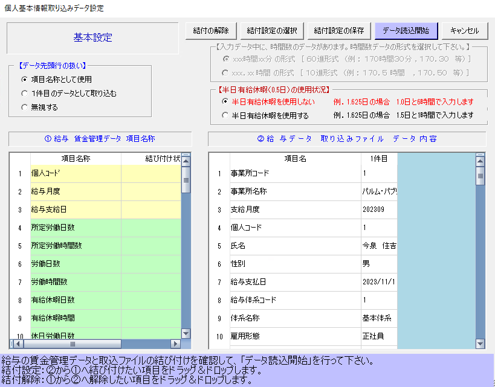{kind=link}
【データ先頭行の扱い】
・給与項目名称として使用
取り込んだデータ（右の表）の先頭行を、給与項目名称として扱います。
・１件目のデータとして取り込む
取り込んだデータ（右の表）の先頭行を、１件目のデータとして取り込みます。
給与項目名称は自動で「項目01」「項目02」・・・と振られていきます。
・無視する
取り込んだデータ（右の表）の先頭行のみ、無視して取り込みません。
給与項目名称は自動で「項目01」「項目02」・・・と振られていきます。
{kind=link}
【半日有給休暇（0.5日）の使用状況】
有給休暇のデータの形式を、
「半日有給休暇を使用しない 例.１．６２５日の場合 １.０日と６時間で入力します」
もしくは
「半日有給休暇を使用する 例.１．６２５日の場合 １．５日と１時間で入力します」
のどちらかを選択してください。
「半日有給休暇を使用しない 例.１．６２５日の場合 １.０日と６時間で入力します」が初期表示されます。
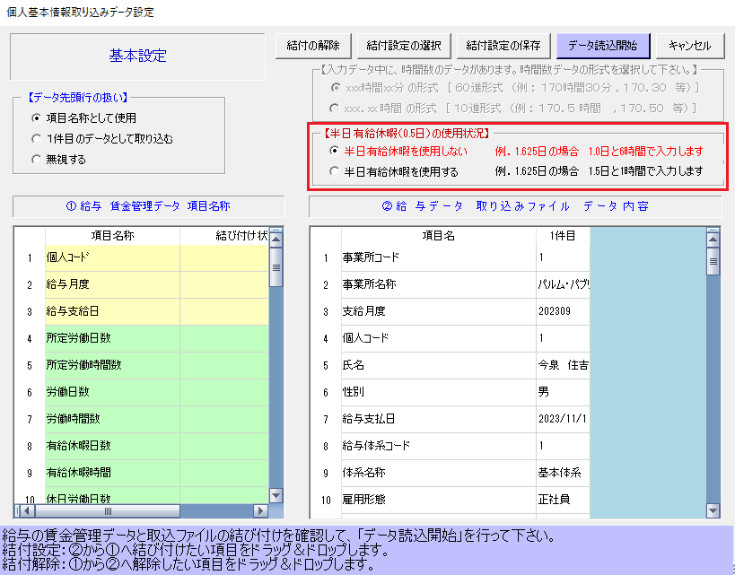{kind=link}
各機能について
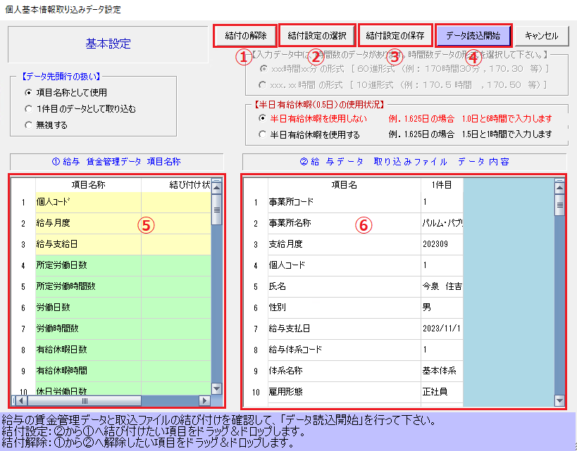{kind=link}
① 結び付けを全て解除して最初から結び付けを行う場合に使用します。
② 保存してある結び付けを使用する場合のボタンです。
③ 次回以降も同じファイルにて取り込みを行う場合は保存すると便利です。
④ 結び付けを行った項目を読み込み、メイン画面に表示します。
⑤ 「１-２ 指定月度の賃金管理データ支給・控除名称の登録」で登録した賃金管理データ項目が表示されています。
背景色が白色は結び付けられた項目です、背景色が白色以外は結び付けられていない項目です。
⑥ 読み込んだデータ・ファイルの内容を、先頭から５件表示しています。
背景色が白色は結び付けられていない項目です、背景色が白色以外は結び付けられた項目です。
項目の結び付け方法
{kind=link}
{kind=link}
{kind=link}
{kind=link}
④ 賃金台帳（賃金管理）にデータを登録する
メイン画面に取り込んだデータが表示されていることを確認してください。
｜ポイント｜
・全ての項目が表示されています。
・データは結び付けた項目だけに表示されています。
・書込列は、社労法務システムに書き込みたいデータにチェックをつけることで選択することができます。
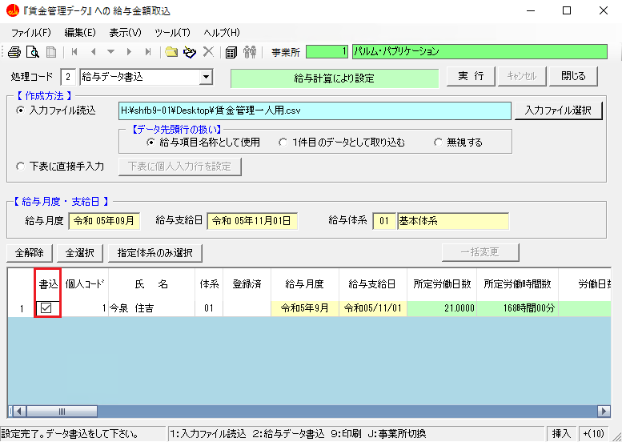{kind=link}
・現在のページの「１-１ 給与月度・給与支給日と支給項目・控除項目の設定の手順」でも触れていますが、体系列は事業所に給与体系が１種類の場合は表示されません。
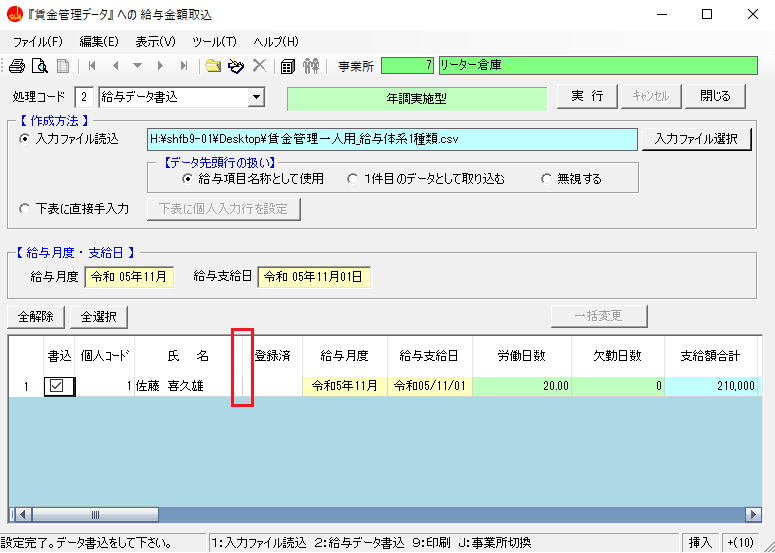{kind=link}
・「指定体系のみ選択」ボタンも体系列と同様で、事業所に給与体系が１種類の場合には表示されません。
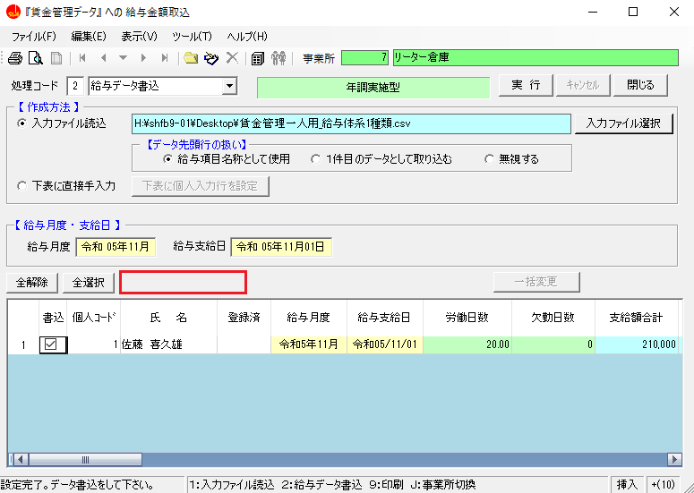{kind=link}
・設定画面（③ 項目の結び付けを行う 参照）にて給与月度と給与支給日を紐づけない場合、設定画面（１-１ 給与月度・給与支給日と支給項目・控除項目の設定の手順 参照）にて設定した月が自動で設定されます。
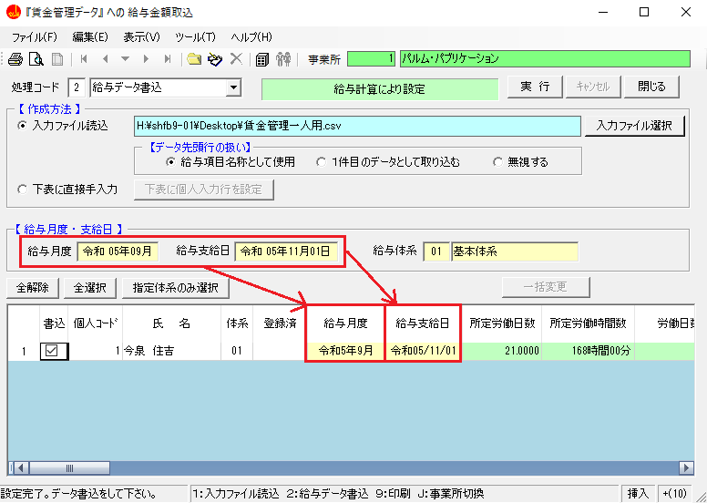{kind=link}
「指定体系のみ選択」ボタンは複数体系がある場合は支給項目と控除項目が変わっていることもあるので、クリックすると「１-１ 給与月度・給与支給日と支給項目・控除項目の設定の手順」にて選択した体系だけが選択できます。
また、複数体系がある場合でも支給項目と控除項目が同じ場合はそのまま取り込んでも問題ありません。
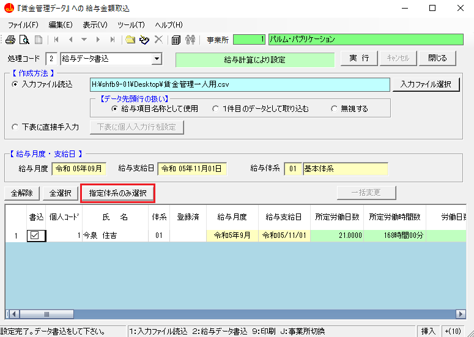{kind=link}
最後に、処理コードを確認してから実行ボタンをクリックします。
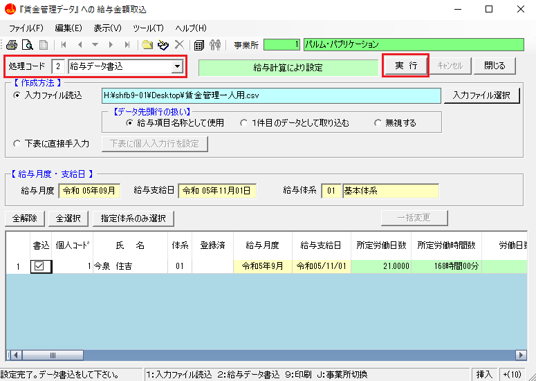{kind=link}
該当給与月度にデータが存在する場合としない場合で確認画面が変わります。
｜ポイント｜
存在しない場合（初めて該当月度にデータを登録する場合）
{kind=link}
存在する場合（該当月度のデータを変更する場合）
空欄の項目は保存されません。また、０は空欄でないので保存されます。
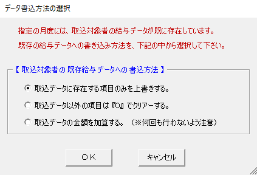{kind=link}
① 取込データに存在する項目のみを上書きする
既存のデータに存在し、取込データに存在しない項目の値は、既存のデータがそのまま残ります。
反対に、既存のデータに存在せず、取込データに存在する項目の値は、上書きされます。
例：既存のデータの食事代が1,000円、取込データの食事代が2,000円の場合、食事代は2,000円になります。
② 取込データ以外の項目は『０』でクリアする
既存のデータに存在し、取込データに存在しない項目の値は、『０』でクリアされます。
反対に、既存のデータに存在せず、取込データに存在する項目の値は、①と同様に上書きされます。
例：既存のデータの食事代が1,000円、取込データの食事代が0円もしくは空白の場合、食事代は0円になります。
③ 取込データの金額を加算する
既存のデータに取込データの金額を加算します。
金額関係以外は加算されません。
例：既存のデータの食事代が1,000円、取込データの食事代が2,000円の場合、食事代は3,000円になります。
これで賃金台帳（賃金管理）が登録されました。
１-３ 直接入力する
画面に直接入力して取り込む方法を解説します。
入力忘れで特定の項目を修正したい場合、一覧形式で一気に取込みたい場合、Excelを持っていない場合など、他にも多くの場合に有効活用されます。
{kind=link}
{kind=link}
{kind=link}
{kind=link}
{kind=link}
{kind=link}
{kind=link}
{kind=link}
{kind=link}
{kind=link}
{kind=link}
{kind=link}
{kind=link}
{kind=link}
画面が表示されるタイミングについて
ファイルより取り込む場合は、「入力ファイル選択」ボタンをクリックしますと最初に表示されます。
直接入力する場合は、「下表に個人入力行を設定」ボタンをクリックしますと最初に表示されます。
｜ポイント｜
① 取込みを行う給与月度は、１か月か複数月のどちらでもできる
１ヶ月を選択した場合と複数ヶ月を選択した場合で、以下のように画面が変わります。
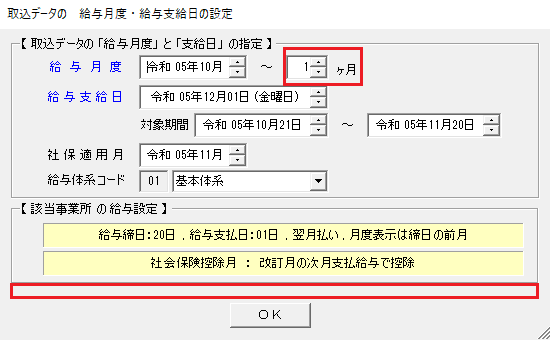 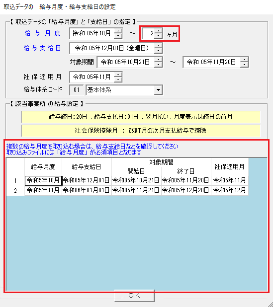② 給与支給日は事業所情報管理メニューの事業所基本情報新規登録にて登録したデータが自動で設定されます。
③ 指定した給与月度の対象期間が表示されます。（締日翌日～締日）
④ 指定した給与月度に対応する社会保険の適用月が表示されます。
⑤ 複数の給与体系がある場合は、給与体系の選択欄が表示されますので、取込を行う体系を選択してください。
※ 給与体系ごとに給与項目設定が異なるため選択が必要な項目です。
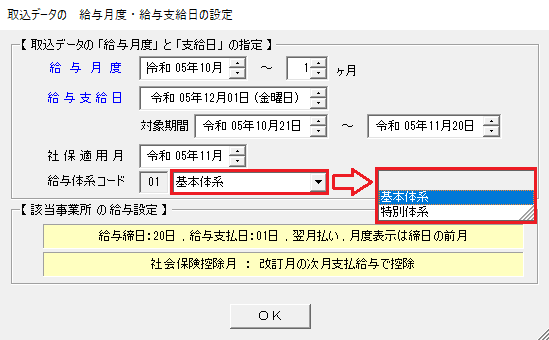また、取込データは給与体系別に別ファイルでご用意ください。
｜ポイント｜
・給与体系が１種類の場合は、選択する必要がないため以下のように給与体系コードの選択ができません。
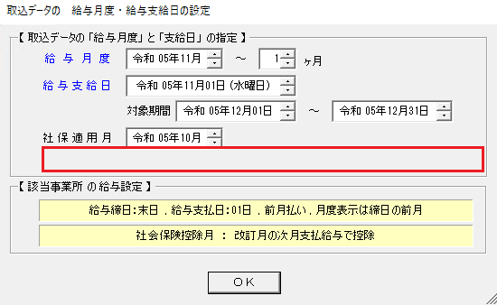・入力ファイルは、ＣＳＶ形式又はエクセル形式で作成してください。
・データは、１つのシートに１事業所の１ヶ月分が入っている、又は、複数月で一度に取り込む場合は、１つのシートに１事業所ごと複数月のデータを用意してください。シートが分かれている場合は、一度に複数月の取り込みはできません。